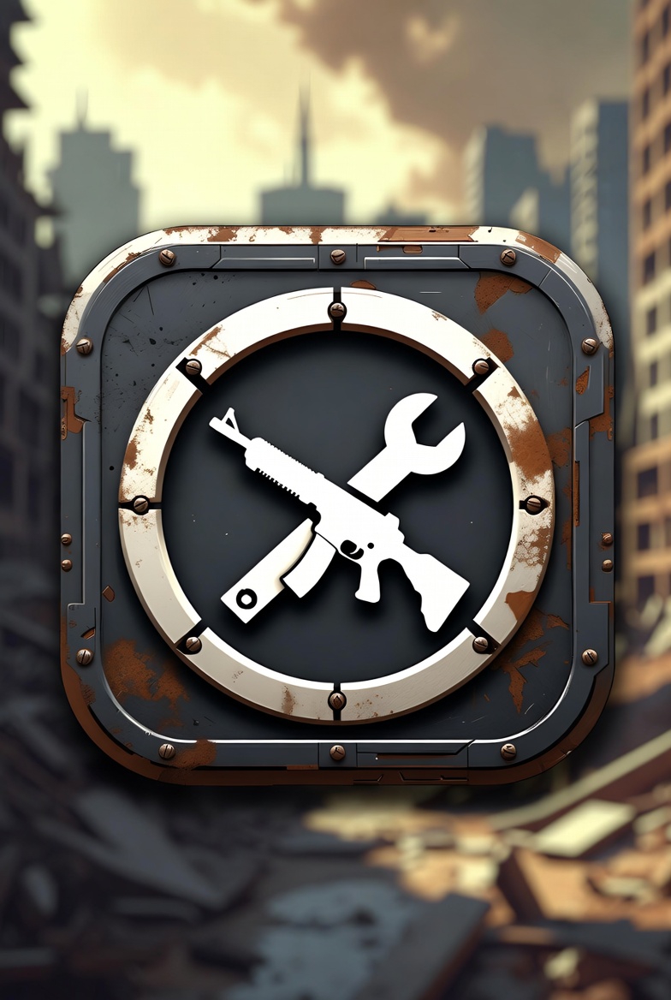
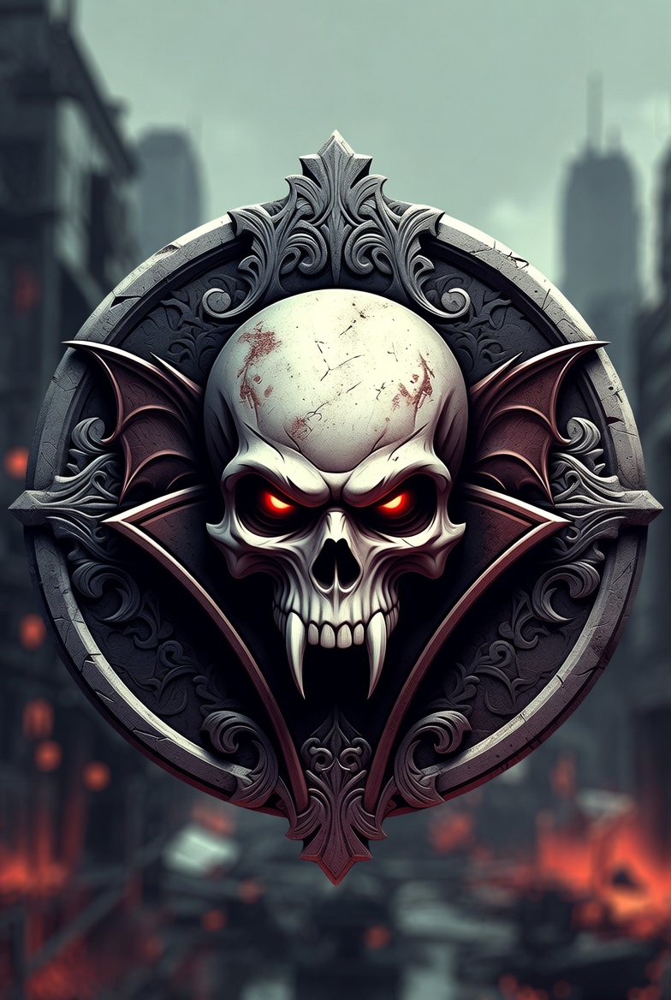
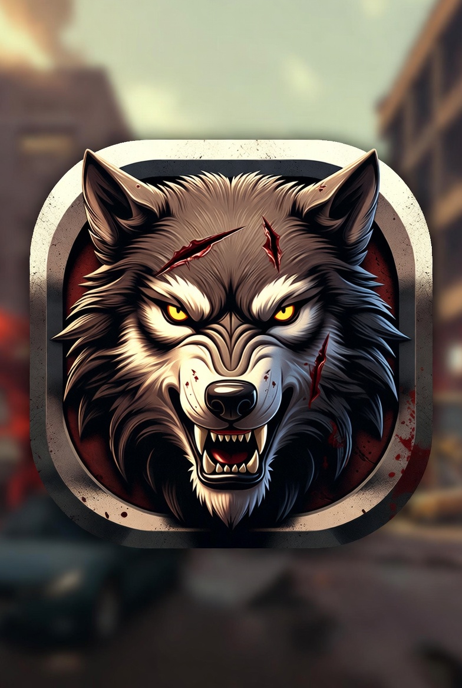
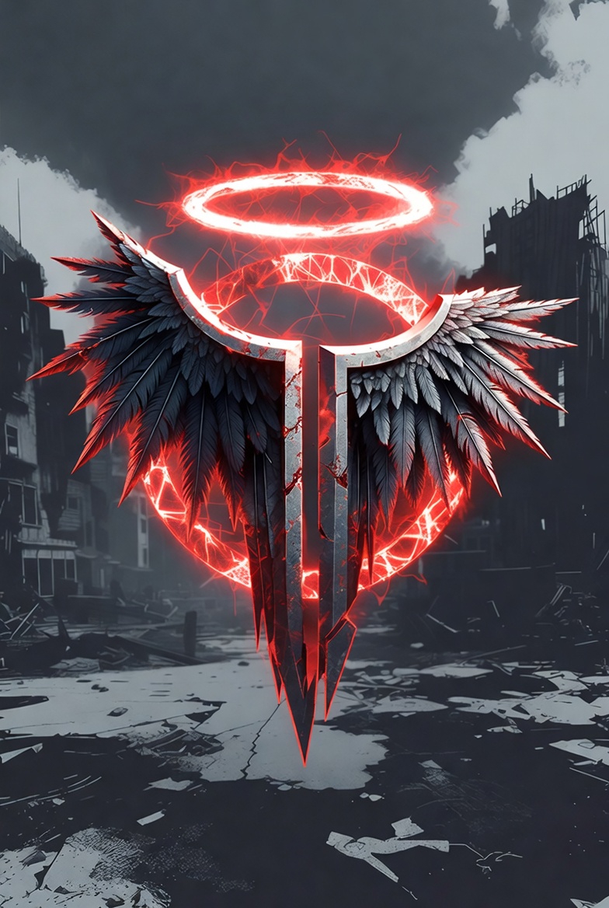
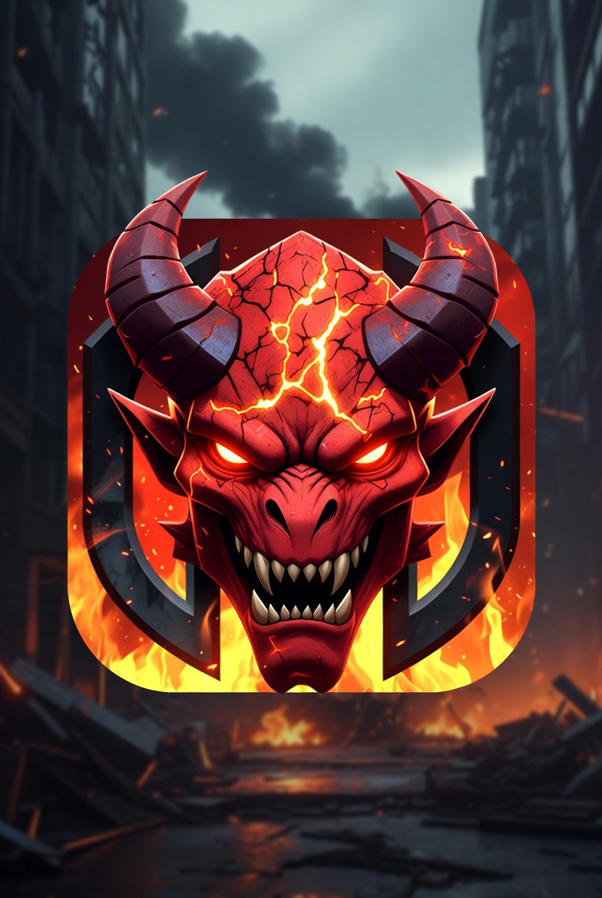
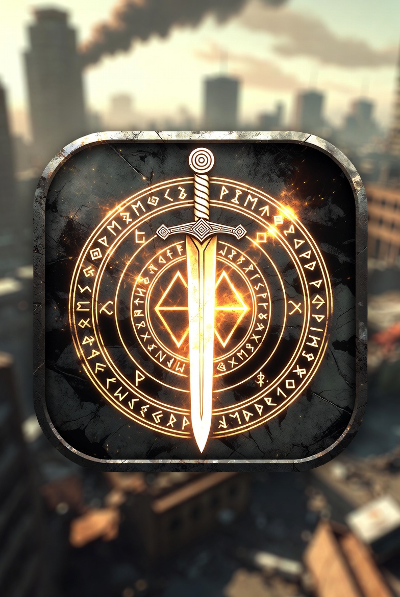
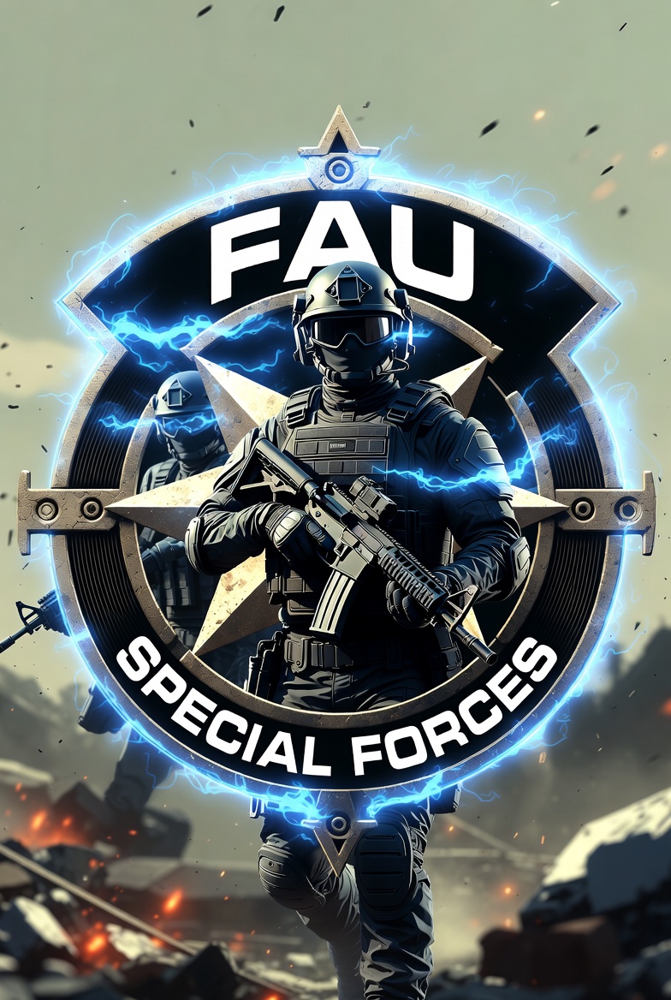

Clãs Humanos
Sobreviventes que se organizam, defendem refúgios e apoiam NPCs armados.
Ver classe relacionada ↗CLÃS · FACÇÕES · REFÚGIOS
Conheça as alianças previstas e como o sistema de clãs foi pensado.
ALIANÇAS · TERRITÓRIO · PROGRESSÃO
As facções abaixo vêm do material do site antigo e dos sistemas descritos no WORLD. Requisitos fixos de nível, moeda, custo e tamanho não foram mantidos porque eram números de demonstração sem confirmação no jogo.

Sobreviventes que se organizam, defendem refúgios e apoiam NPCs armados.
Ver classe relacionada ↗

Grupos de lobisomens voltados a território, combate e progressão conjunta.
Ver classe relacionada ↗
Alianças entre anjos caídos para proteção e domínio de áreas.
Ver classe relacionada ↗
Grupos demoníacos ligados à disputa de território e hierarquia.
Ver classe relacionada ↗

Unidades militares organizadas para combate, resgate e contenção.
Ver classe relacionada ↗Quantidade mínima de membros, nível exigido, moeda e local de registro ainda precisam ser confirmados. Não use valores antigos como requisito oficial.
Ver classes ↗